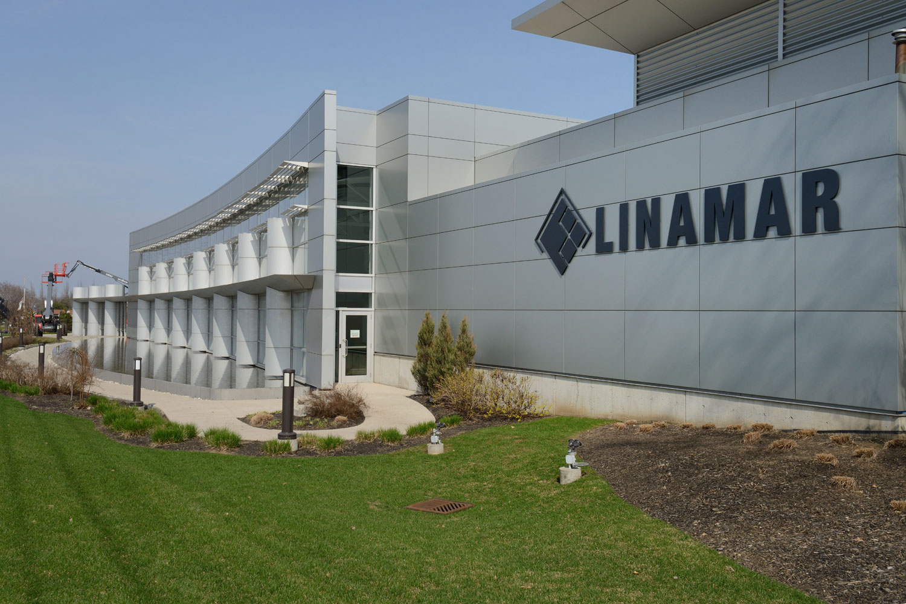

About Linamar
Linamar Machining Limited was founded in 1966 in Ariss Ontario by Frank Hasenfratz, the name was a combination of his wife and daughters' names, Margaret, Linda, and Nancy. Mr. Hasenfratz's daughter, Linda, is now CEO of the renamed Linamar Corporation. Based primarily in Guelph Ontario the business has spread all around the world and has locations in 15 countries with it's newest expansion being the Montupet branches in France. While the company mainly focuses on automotive manufacturing, they have hands in many different areas of development including marine, recreation, agriculture, energy, aerial work platforms, to name a few. I worked primarily at the Corporate Headquarters and the Frank Hasenfratz Centre of Excellence in Manufacturing (The Centre) though I visited many of the different facilities in Guelph Ontario. Each facility had a designated Desktop Support Technician (possibly accompanied by a co-op student) who covered the IT needs of that plant or office. The Desktop Support Technicians or DST's are a tightly knit group despite the fact that they are all working at different facilities, having regular meetings and aiding each other whenever possible. This sense of community along with the various events and activities the corporation has for its employees makes Linamar a very engaging place to work.
 The Frank Hasenfratz Centre of Excellence in Manufacturing.Description Of My Position
During my time at Linamar I provided a variety of different services to both the Corporate Headquarters and The Centre. This includes the replacement of hardware, management of user software, preparing purchase orders for new equipment, and being a first responder for any immediate security threats. To start every day I would respond to any tickets that were sent in the night before by users seeking aid and try to work on any long term issues before new tickets arrived. Often users would not put in a ticket and instead come find me directly meaning I had to be available or reachable any time a user made a request even if I was at another facility. During the slower times I was given the task of cleaning up the corporate servers of unwanted personal files and excessive backups. By doing this I was able to relieve the company of a costly upgrade to their storage space. One of the other projects I was in charge of was the audio and visual setup for many of the 50th anniversary celebrations that occurred during my time at the company. This included everything from setting up microphone and sound systems in a variety of locations to editing the footage of the events afterwards. The majority of the time I spent at Linamar was unsupervised as I was covering for vacations and medical absences. This allowed me to learn about time management and allowed me to build a better rapport with some of the people to whom I was providing support.
Goals
Oral Communication
Goal: Many of the people I work with do not have the same exposure to the levels of technology that I have so my communication of solutions will be something to focus on. This is something I was working on at my previous position but the clients there were a little closer to my level of experience than my current one and I will have to continue to grow in this area.
Action Plan: Remain patient and calm when discussing technological issues with those who are not of a technological background. Ensure they fully understand what is happening before moving on to another problem and or solution.
Measure of Success: Many of the clients get frustrated as their time and position are very important to the company, particularly as I am working at the corporate headquarters. If I can reduce the frustration and ease their problem solving I will consider it a success.
Reflection: I believe that I accomplished this goal. While I occasionally I still had clients who were frustrated with the process my explanations seemed to help them understand and relieve some of the stress involved during downtimes. It seemed to shift their frustration from IT and help them to understand why the issue occurred. This is something I will continue to work on in future positions whether they be in IT or in software development.
Time Management
Goal: At my previous position it became very easy to spend most of the day doing next to nothing as there was little to no project work available. I want to remain vigilant in asking for projects to ensure my time at Linamar is well spent.
Action Plan: Keep an eye on how much of my day is spent without an active task and work to minimize that percentage. Asking for projects and when none are available working on anything I can come up with personal or otherwise while still in the scope of productivity.
Measure of Success: The lower the percentage spent without an active task the better.
Reflection: I feel I succeeded in accomplishing this goal. Whether it was side projects or actively helping other users the time I spent at work was very productive and I managed to get a lot done. While there is always room for improvement I believe my time management skills greatly increased.
Problem Solving
Goal: With many projects on the go there are times when things don't go as planned and as desktop support technicians we are forced to come up with creative and or innovative solutions. I would like to be a more crucial contributor in these decisions.
Action Plan: Contribute more in team discussions about the possible courses of action in large projects. Ensure the tech used at the company is user friendly, making it easier for people to work and therefore making the company run smoother even if by a small amount.
Measure of Success: If I could have some of my potential solutions implemented in the company then I would consider this a success.
Reflection: Unfortunately, I did not progress in this area as much as I had hoped. I did manage to voice my opinions more often in the various meetings and collaborative works I completed but no long term solutions I developed were implemented. However voicing my opinion is a good start to begin growing in the area of problem solving and working in a team properly.
Conclusion
I thoroughly enjoyed my time at Linamar and felt that I had more of an impact and a role than I have had at my previous employment opportunities. Due to the absence of the many of the staff I had to take on more responsibilities than originally planned. This helped me to work on my ability to self manage and be aware of the outcome of my actions in a workplace. I also learned how to work as a key member of a department instead instead of just being the co-op student in the background. Over all working at Linamar was a fantastic learning experience, I formed many new relationships with colleagues and grew as an employee. I look forward to what future co-op placements have to offer.